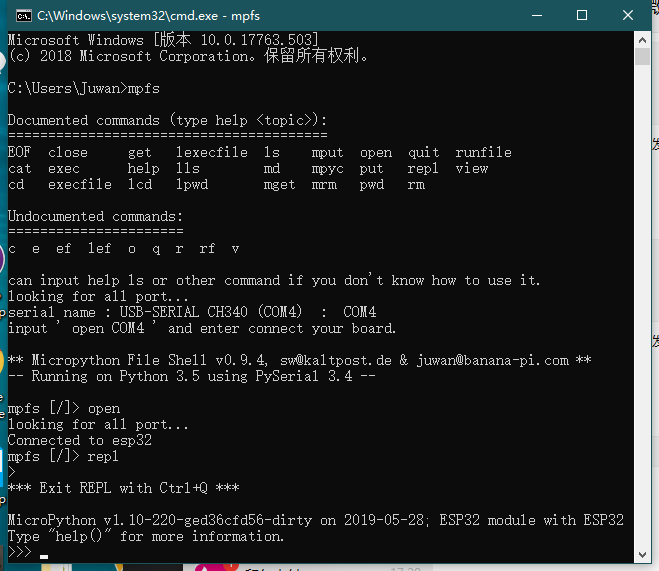

再谈 REPL
请确认您的编程环境里已经安装了 Python3 和 pip工具，否则下面的内容你都无法开始。这里推荐使用MicroPython-Samples来部署你的开发环境。
我们已经知道 REPL可以进行一些简单的代码交互和反馈，现在我们就要让重新认识一下 REPL 了。
安装 mpfshell 工具
请从此处获取 mpfshell-lite工具，安装与使用方法均在此提及。
在 mpfshell 的 REPL
安装了它，在 repl 即可使用下述的功能，当然你也可以在 Xshell 、 MobaXterm等其他串口终端中实现。

输入历史记录
REPL 会记住您输入的一定数量的前几行文本（在 ESP32 上最多 8 行）。要调用上一行，请使用 向上 和 向下 箭头键。
使用 Tab 键
Tab键可以查看模块中所有成员列表。这对于找出模块或对象具有的函数和方法非常有用。假设您在下面的例子中导入了 import machine 然后键入 . 再按 Tab 键以查看 machine 模块所有成员列表:
>>> import machine
>>> machine.
__class__ __name__ ADC DAC
DEEPSLEEP DEEPSLEEP_RESET EXT0_WAKE
EXT1_WAKE HARD_RESET I2C PIN_WAKE
PWM PWRON_RESET Pin RTC
SLEEP SOFT_RESET SPI Signal
TIMER_WAKE TOUCHPAD_WAKE Timer TouchPad
UART ULP_WAKE WDT WDT_RESET
deepsleep disable_irq enable_irq freq
idle mem16 mem32 mem8
reset reset_cause sleep time_pulse_us
unique_id wake_reason
>>> machine.
行继续和自动缩进
您键入的某些内容将需要“继续”，也就是说，需要更多行文本才能生成正确的Python 语句。在这种情况下，提示符将更改为...并且光标将自动缩进正确的数量，以便您可以立即开始键入下一行。通过定义以下函数来尝试此操作:
>>> def toggle(p):
... p.value(not p.value())
...
...
...
>>>
在上面，您需要连续按三次Enter键才能完成复合语句（即三条线上只有点）。完成复合语句的另一种方法是按退格键到达行的开头，然后按Enter键。
（如果您输错了并且想要退出，那么按ctrl-C，所有行都将被忽略。）
您刚刚定义函数功能为翻转引脚电平。您之前创建的pin对象应该仍然存在（如果没有，则需重新创建它），您可以使用以下命令翻转LED:
>>> toggle(pin)
现在让我们在一个循环中翻转 LED （如果您没有 LED，那么您可以打印一些文本而不是调用切换，看看效果）：
\>\>\> import time \>\>\> while True: ... toggle(pin) \# print('test')
... time.sleep\_ms(500) ... ... ... \>\>\>
这将以1Hz（半秒开，半秒关）翻转LED。要停止切换按 ctrl-C，这将引发键盘中断异常并退出循环。
粘贴模式
按 ctrl-E将进入特殊粘贴模式，您可将一大块文本复制并粘贴到REPL中。如果按ctrl-E，您将看到粘贴模式提示:
paste mode; Ctrl-C to cancel, Ctrl-D to finish
===
然后，您可以粘贴（或键入）您的文本。请注意，没有任何特殊键或命令在粘贴模式下工作（例如Tab或退格），它们只是按原样接受。按 ctrl-D 完成输入文本并执行。
其他控制命令
还有其他四个控制命令：
- 空白行上的 Ctrl-A 将进入原始 REPL
模式。这类似于永久粘贴模式，除了不回显字符。 - 空白处的 Ctrl-B 转到正常的 REPL 模式。
Ctrl-C取消任何输入，或中断当前运行的代码。- 空白行上的
Ctrl-D将执行软重启。
管理板子上的文件
mpfs 提供了真正意义上的文件管理功能，近似大多数 linux 终端文件管理工具。
MicroPython 内部提供了基于 oofats 建立的 FAT16分区文件系统，就可以在上面存放一些文件内容，如代码文件、资源文件、音乐文件等等。
详细的你需要去看 mpfshell 的 readme 文档，在这里我说明几个重要功能即可。
mpfs 即为 mpfshell 的简称。
运行 python 文件 lexecfile 和 execfile
execfile 指运行板子上存在的代码文件，添加了 l即可将本地的代码文件传到板子中并进入 repl 中运行。
查看板子上的所有文件 ls
这将列举板子上所有的目录、文件的名称。
mpfs [/]> ls
Remote files in '/':
boot.py
wifi_cfg.py
快速查看文件内容 cat
假如要查看上述所显示的 boot.py 文件，输入 cat boot.py 。
mpfs [/]> cat boot.py
# This file is executed on every boot (including wake-boot from deepsleep)
#import esp
#esp.osdebug(None)
#import webrepl
#webrepl.start()
import wifi
wifi.ready()
mpfs [/]>
删除指定文件 rm
假如要删除上述所显示的 boot.py 文件，输入 rm boot.py
即可，此操作不可逆。
文件的 推送 put 和 获取 get
这两兄弟可以帮你把文件下载或上传，保存在 lpwd 目录下，可用 lcd 修改。
还有更多功能你需要 亲自去尝试 或 在工具的文档中 寻找答案。